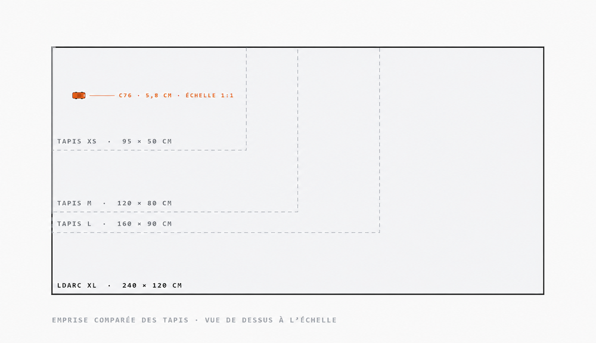
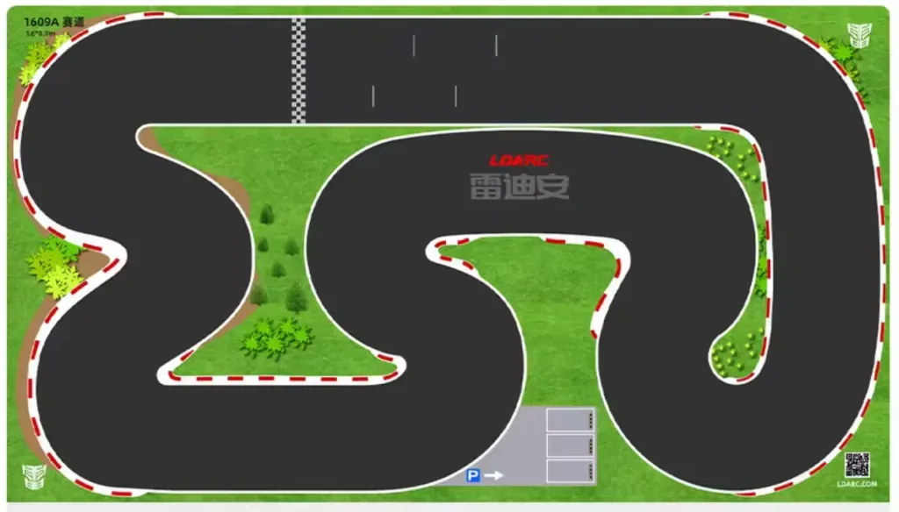
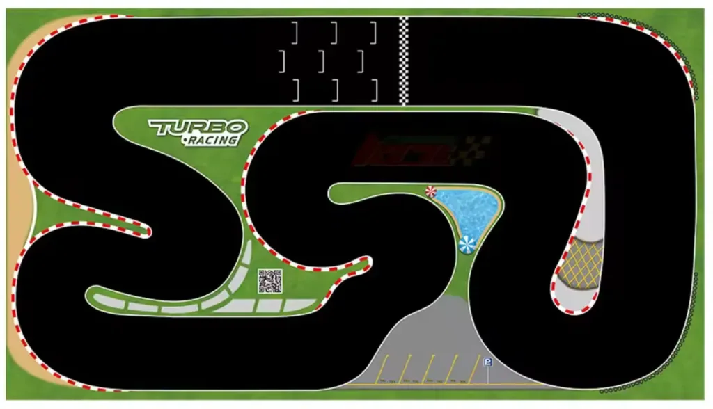
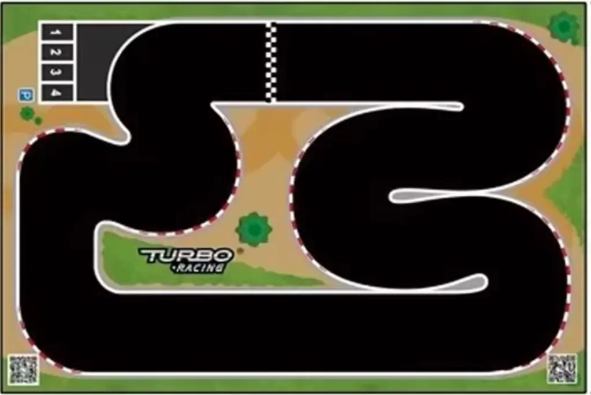
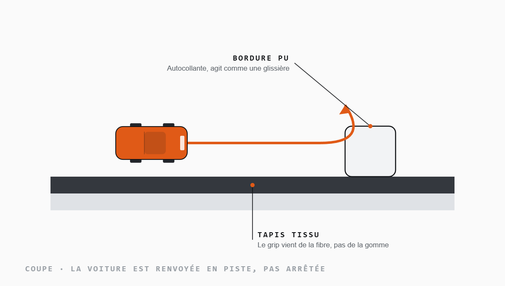
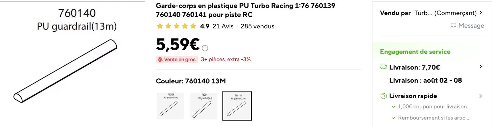

Matériel · la piste
Circuits et tapis
Sans circuit, la discipline perd tout son intérêt. C’est l’élément qui permet d’apprendre et de se mesurer. Un petit tapis suffit pour s’entraîner ; il faut du grand pour se battre à cinq, six ou huit.
- Du 95 × 50 au 240 × 120 cm
- Piste ≈ 12 cm de large
- Bordures PU autocollant
Le critère décisif est la largeur de piste, pas la surface totale. Trop étroit, on ne peut pas doubler et la course devient une file indienne. Compte un 160 × 90 cm pour quatre pilotes et un 240 × 120 cm pour huit. Un 95 × 50 cm reste parfait pour s’entraîner seul.
Les tapis à privilégier
| Marque / référence | Dimensions | Surface | Usage |
|---|---|---|---|
| LDARC XL | 240 × 120 cm | Tissu + bordures | Course, jusqu’à 8 pilotes |
| LDARC L | 160 × 90 cm | Tissu + bordures | Course |
| Turbo Racing L | 160 × 90 cm | Tissu | Course |
| Turbo Racing M | 120 × 80 cm | Tissu | Démonstration |
| Turbo Racing XS | 95 × 50 cm | Tissu | Entraînement |


Les tracés du commerce
À quoi ressemble un tapis, concrètement
Tous impriment la même grammaire : piste noire, vibreurs rouge et blanc dans les virages, ligne de départ à damier, emplacements de grille et zone de stand. Ce qui change, c’est la longueur des lignes droites et le nombre d’épingles.


Plans des fabricants, reproduits à titre informatif. Ce site n’a aucun lien commercial avec Turbo Racing ni LDARC.

Indispensable
Les bordures
Si ton tapis n’en a pas, procure-t’en : idéalement une bande autocollante en polyuréthane, qui agit comme une glissière et renvoie la voiture en piste au lieu de l’arrêter. On en trouve facilement sur les plateformes en ligne, autour de 15 € les 5 mètres.
C’est le seul accessoire dont l’absence se paie immédiatement : sans bordure, chaque erreur devient un arrêt de course et une voiture à aller récupérer par terre.

Construire son circuit
Beaucoup de pilotes fabriquent le leur, et certains sont magnifiques. Un exemple ultra-compact : 80 × 120 cm, un carton rigide et des bordures en polyuréthane. Il y a de quoi s’inspirer sur les groupes Facebook et sur YouTube.
Les systèmes de comptage
De l’application qui reconnaît les voitures à la caméra aux étiquettes NFC / RFID collées sous le châssis : le chrono transforme une soirée sympa en vraie compétition.
Combien tout cela coûte-t-il vraiment ?
Le calculateur de budget